Raquel Rennó compartilhou as imagens do Flickr da Paula, e as abaixo, feitas por ela durante o Pixelache 2013.
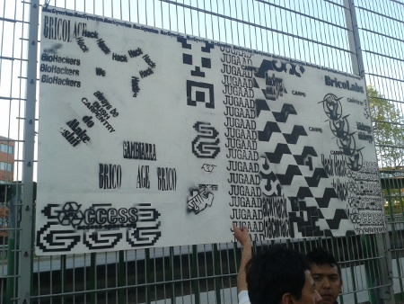
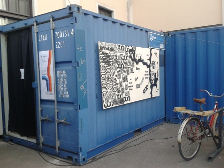
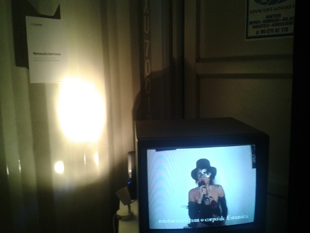
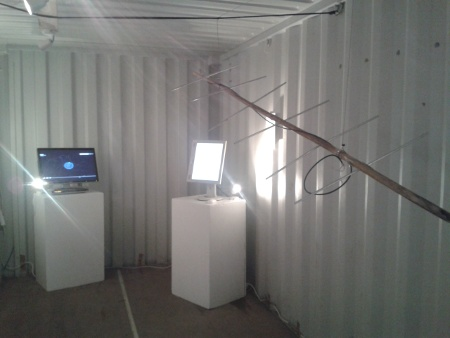
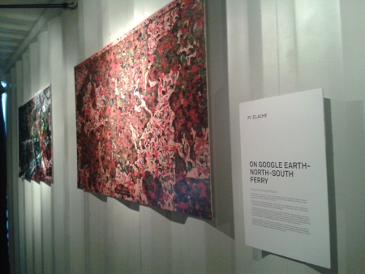
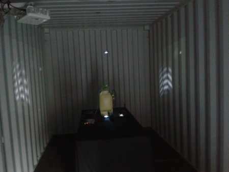

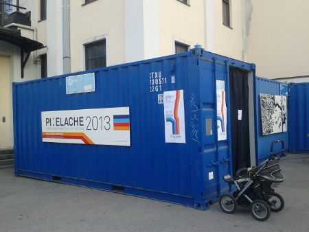

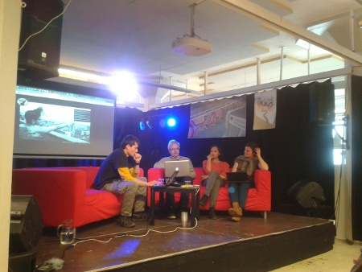
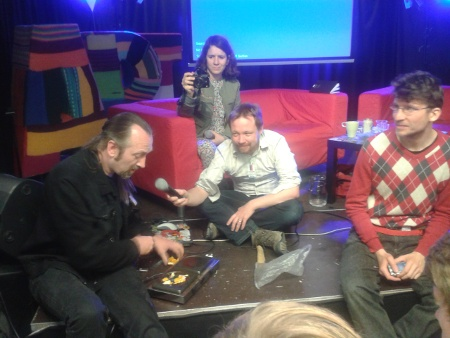
Raquel Rennó compartilhou as imagens do Flickr da Paula, e as abaixo, feitas por ela durante o Pixelache 2013.
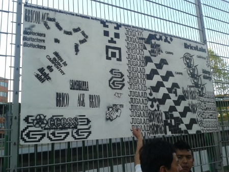
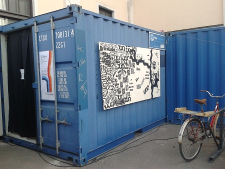
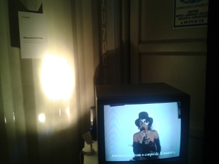
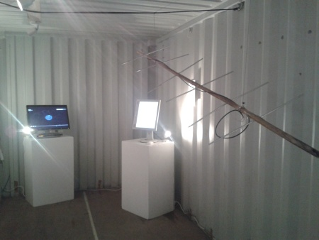
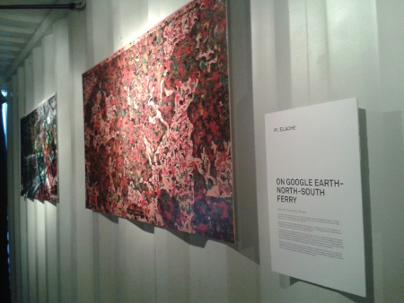
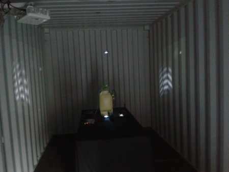
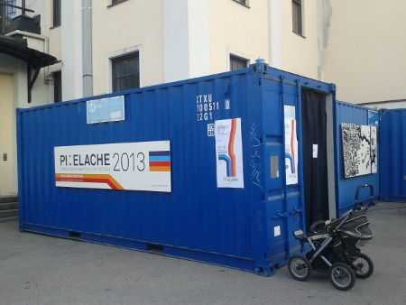
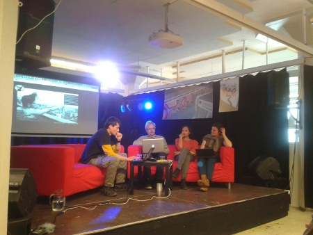
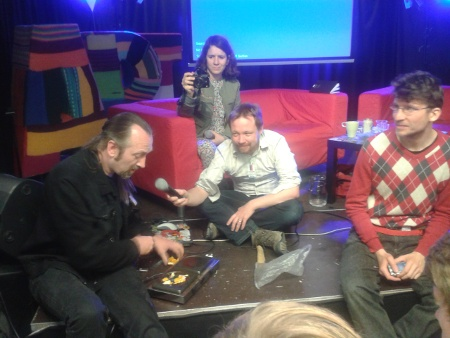
Esse texto é para você!
Você que estava acostumadx a ler duas ou três postagens diárias aqui no MutGamb e está estranhando a falta delas e se perguntando o porquê disso. Ok.
O blog não vai acabar, o mundo não acabou.
Começei um trabalho de entrevistas e copilações em janeiro do ano passado (2012) que rendeu uma série de assuntos, polêmicas, acessos, discursos e *complete aqui com outras opções.
Em meio a uma rotina caótica entre cidades, mestrado, trabalho e vida, dediquei algumas horas diárias (cerca de 3 ou 4) para conversar com pessoas da lista e tentar entender a dinâmica da rede - se é que isso existe - para externalizar de uma forma menos abstrata para quem estivesse de fora.
Não sei se consegui. Acho que não.
Especialmente no final do ano, em dezembro, quando começei a questionar a abetura de processos falas e registros para fora, de coisas que estão dentro de uma rede "de afetos" - ou seria de sentimentos viscerais de mais?!
Para 2013, o fluxo desse blogue vai mudar um pouco.
Não estarei sozinha, Felipe Cabral e Isaac Filho participaram comigo, depois de conversas antigas sobre co-labores :)
Por enquanto, estamos conversando e revendo processos.
Além disso, o blogue é livre para a criação de usuários e posts.
Voltamos em breve.
É 2013, que seja feliz.
Maira Begalli
Férias. Época que as pessoas lotam lugares: parques, museus, praias e depois compartilham suas experiências nas redes sociais.
Paulo Bicarato achou o Grande Museu da Internet: não precisa de $ para visitar e só fecha no Carnaval brasileiro. Em seu acervo online é possível acessar narrativas (como o gif Peanut Butter Jelly Time, 2000) de como a internet tornou-se o que é hoje.

Ah, a internet...essa que causa dissonâncias sobre controle de fluxos, que levanta questionamentos necessários, mas que também mostra que é possível viver muito, além das expectativas previstas....
E conecta ações, como a linda The Recycled Orchestra, no Paraguai:
(...) e as bicicletas quase-lúdicas feitas de papelão, pelo israelense Izhar Gafni:

Marcos Egito, tem 34 anos, "9 dias e algumas horas", é: "(des)Educador de Software / Robótica livre no Centro Marista, Circuito Jovem do Recife - CRC Marista". Nessa semana, ele compartilhou mais uma conquista: é finalista do 3º Concurso Aprender e Ensinar, e respondeu algumas perguntas para o MutGamb...
Estudava Sistema da Informação mais larguei no 3º período para fazer Pedagogia, moro em Camaragibe região metropolitana de Recife. Participo da MetaReciclagem desde 5 de novembro de 2011, porém parece que já faz décadas. Me sinto bem, me encontro quando encontro os metarecicleiros.
1) Como surgiu a ideia de você se inscrever no Prêmio?
Marcos Egito: Trabalhava na ONG Trapeiros de Emaús, lá conheci uma pessoa no Banco do Brasil, a Fátima. Eu fazia a manutenção dos Kits telecentro que o Banco do Brasil doava para zona da mata, no CRC-Marista. Voltei a encontrar a Fátima, pois o CRC tem o Banco do Brasil como parceiro. Bom, um dia estava eu lendo a revista Fórum na internet, e li sobre o concurso mas não liguei pois pensei, "tem outros melhores que eu". Lendo os meus e-mail, vi um e-mail da Fátima e do meu diretor Domingos Sávio dizendo para eu me escrever. Após ler com mais calma tudo, me escrevi, pois vi que era a possibilidade de mostrar como outros pessoas podem ser ajudados e ajudar, fazendo o que faço. Era também uma forma de dar mais visibilidade ao trabalho que hoje se faz com Software Livre (Robótica Livre), sucata, pessoas que podem até parecer pirados, que estão dispostos a compartilhar conhecimento a ser igual por mais diferente que pareçam!leia mais >>
Mutirão da Gambiarra foi idealizado pela MetaReciclagem

Apoio:


Assine Mutirão da Gambiarra por RSS